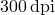

In this section, we describe the commands used to control the format of the graphic output produced by PyXPlot. This continues the discussion from Section 2.7 of how the set terminal command can be used to produce plots in various graphic formats, such as postscript files, jpeg images, etc.
Many of these terminals – the word we use to describe an output format – accept additional parameters which configure the exact appearance of the output produced. For example, the default terminal, X11, which displays plots on the screen, has such settings. By default, each time a new plot is generated, if the previous plot is still open on the display, the old plot is replaced with the new one. This way, only one plot window is open at any one time. This behaviour has the advantage that the desktop does not become flooded with plot windows.
If this is not desired, however – for example if you want to compare two plots – old graphs can be kept visible when plotting further graphs by using the the X11_multiwindow terminal:
set terminal X11_singlewindow plot sin(x) plot cos(x) <-- first plot window disappears
c.f.:
set terminal X11_multiwindow plot sin(x) plot cos(x) <-- first plot window remains
As an additional option, the X11_persist terminal keeps plot windows open after PyXPlot exits; the above two terminals close all plot windows upon exit.
If the enlarge modifier is used with the set terminal command then the whole plot is enlarged, or, in the case of large plots, shrunk, to the current paper size, minus a small margin. The aspect ratio of the plot is preserved. This is most useful with the postscript terminal, when preparing a plot to send directly to a printer.
As there are many changes to the options accepted by the set terminal command in comparison to those understood by Gnuplot, the syntax of PyXPlot’s command is given below, followed by a list of the recognised settings:
set terminal { X11_singlewindow | X11_multiwindow | X11_persist |
postscript | eps | pdf | gif | png | jpg }
{ colour | color | monochrome }
{ portrait | landscape }
{ invert | noinvert }
{ transparent | solid }
{ antialias | noantialias }
{ enlarge | noenlarge }
x11_singlewindow |
Displays plots on the screen (in X11 windows, using Ghostview). Each time a new plot is generated, it replaces the old one, to prevent the desktop from becoming flooded with old plots.†The authors are aware of a bug, that this terminal can occasionally go blank when a new plot is generated. This is a known bug in Ghostview, and can be worked around by selecting File Reload within the Ghostview window. [default when running interactively; see below] |
x11_multiwindow |
As above, but each new plot appears in a new window, and the old plots remain visible. As many plots as may be desired can be left on the desktop simultaneously. |
x11_persist |
As above, but plot windows remain open after PyXPlot closes. |
postscript |
Sends output to a postscript file. The filename for this file should be set using set output. [default when running non-interactively; see below] |
eps |
As above, but produces encapsulated postscript. |
As above, but produces pdf output. |
|
gif |
Sends output to a gif image file; as above, the filename should be set using set output. |
png |
As above, but produces a png image. |
jpg |
As above, but produces a jpeg image. |
colour |
Allows datasets to be plotted in colour. Automatically they will be displayed in a series of different colours, or alternatively colours may be specified using the with colour plot modifier (see below). [default] |
color |
Equivalent to the above; provided for users of nationalities which can’t spell. Uwasy, |
monochrome |
Opposite to the above; all datasets will be plotted in black. |
portrait |
Sets plots to be displayed in upright (normal) orientation. [default] |
landscape |
Opposite of the above; produces side-ways plots. Not very useful when displayed on the screen, but you fit more on a sheet of paper that way around. |
invert |
Modifier for the gif, png and jpg terminals; produces output with inverted colours.†This terminal setting is useful for producing plots to embed in talk slideshows, which often contain bright text on a dark background. It only works when producing bitmapped output, though a similar effect can be achieved in postscript using the set textcolour and set axescolour commands (see Section 5.2). |
noinvert |
Modifier for the gif, png and jpg terminals; opposite to the above. [default] |
transparent |
Modifier for the gif and png terminals; produces output with a transparent background. |
solid |
Modifier for the gif and png terminals; opposite to the above. [default] |
antialias |
Modifier for the gif, jpg and png terminals; produces antialiased output, with colour boundaries smoothed to disguise the effects of pixelisation [default] |
noantialias |
Modifier for the gif, jpg and png terminals; opposite to the above |
enlarge |
Enlarge or shrink contents to fit the current paper size. |
noenlarge |
Do not enlarge output; opposite to the above. [default] |
The default terminal is normally x11_singlewindow, matching approximately the behaviour of Gnuplot. However, there is an exception to this. When PyXPlot is used non-interactively – i.e. one or more command scripts are specified on the command line, and PyXPlot exits as soon as it finishes executing them – the x11_singlewindow is not a very sensible terminal to use: any plot window would close as soon as PyXPlot exited. The default terminal in this case changes to postscript.
This rule does not apply when the special ‘–’ filename is specified in a list of command scripts on the command line, to produce an interactive terminal between running a series of scripts. In this case, PyXPlot detects that the session will be interactive, and defaults to the usual x11_singlewindow terminal.
An additional exception is on machines where the DISPLAY environment variable is not set. In this case, PyXPlot detects that it has access to no X-terminal on which to display plots, and defaults to the postscript terminal.
The gif, png and jpg terminals result in some loss of image quality, since the plot has to be sampled into a bitmapped graphic format. By default, this sampling is performed at , though this may be changed using the command set dpi <value>. Alternatively, it may be changed using the DPI option in the settings section of a configuration file (see Section 7.1).